Первоначальная настройка
До того, как начать работать с infakt, необходимо выполнить минимальную настройку аккаунта. Для этого идем в Ustawienia
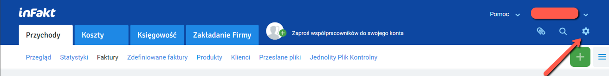
Впишите свой номер NIP и подтянутся сведения о вашем ИП из картотеки
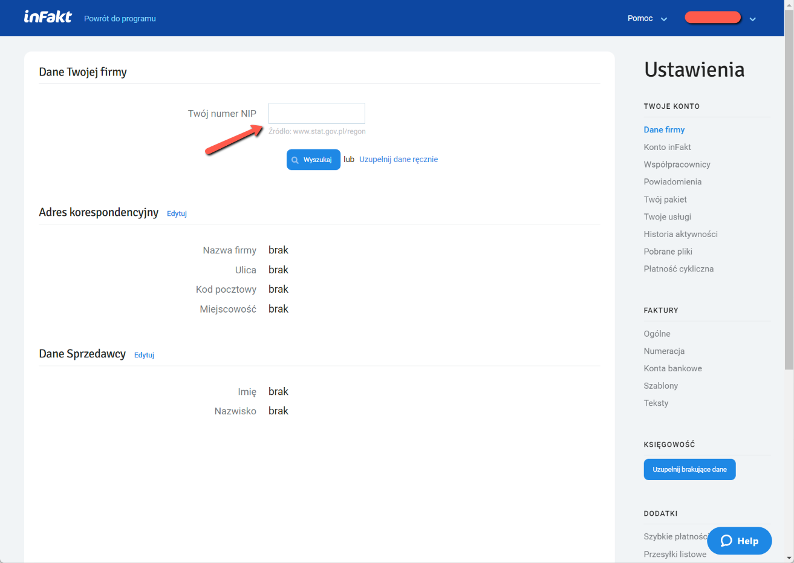
Заполните недостающие поля, так же заполните адрес для корреспонденции (Adres korespondencyjny) и свои данные "продавца" (Dane Sprzedawcy)
Активация бухгалтерского модуля (бесплатно)
Для активации бухгалтерии откройте закладку Księgowość на главном экране. Проверьте свои данные и подтвердите номер телефона. Затем выберите из списка советника/консультанта? из своего региона (не знаю зачем???).
После активации infakt запросит недостающие данные для ведения учета и бухгалтерии. Проверьте регистрационные данные сверху страницы, заполните поля адреса и номера PESEL, затем снизу выберите свою систему учета налогов и VAT (введите свои данные).
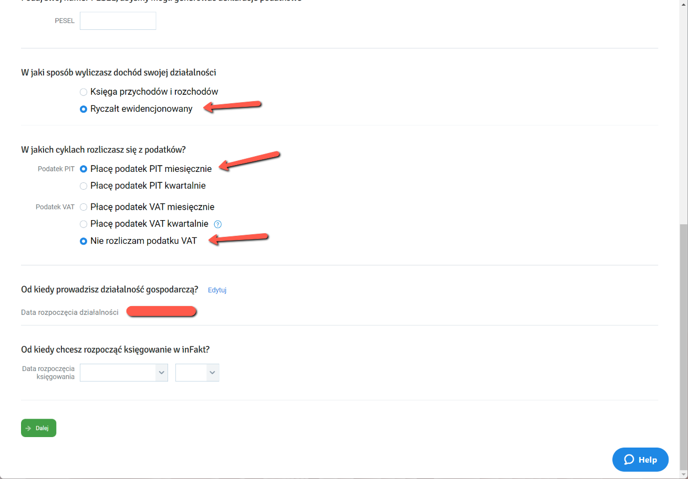
Чаще всего ИТ-шники используют Ryczałt ewidencjonowany в качестве системы учета и ежемесячные зачисления PIT (Płacę podatek PIT miesięcznie). Укажите с какого месяца собираетесь вести учет в infakt.
На следующей странице введите сумму прихода с начала года, освобожденное от уплаты VAT (TODO: плательщики, объясните этот пункт)
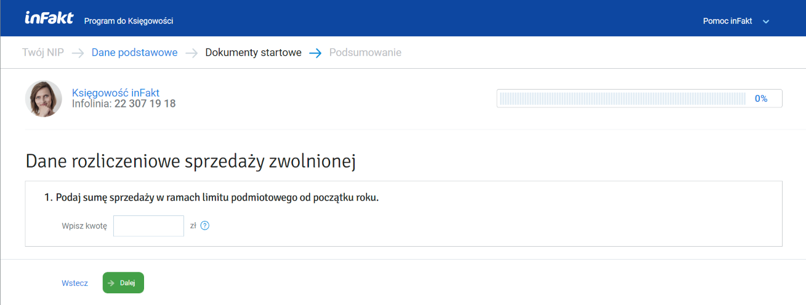
Дальше настраиваем ставку налога и сумму фактур с начала года, если ранее вели бухгалтерию где-то еще помимо infakt.
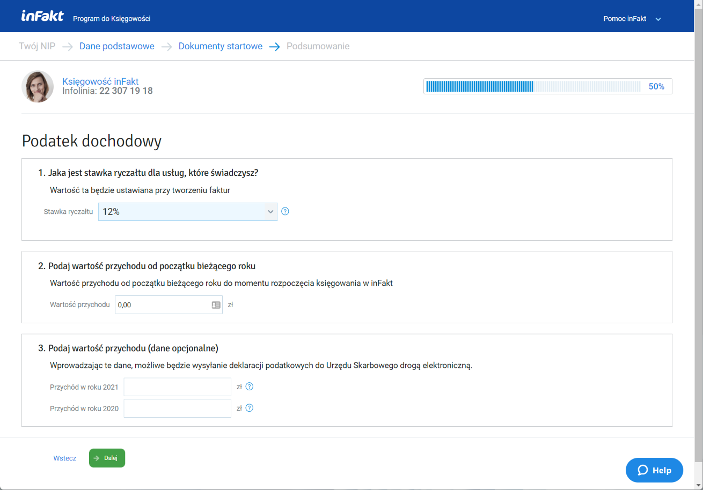
На этом этапе настройка почти завершена. При заходе на страницу Księgowość infakt будет еще спрашивать некоторые вещи по настройке VAT, номер налогового счета, т.д. Эту информацию просто сохраняйте.
Настройка данных ZUS
Следующим шагом идет настройка параметров для ZUS. Перейдите на страницу Księgowość -> Składki ZUS, или в настройках Ustawienia -> Księgowość -> ZUS (до окончания настроек будет светиться кнопка Uzupełnij brakujące dane).
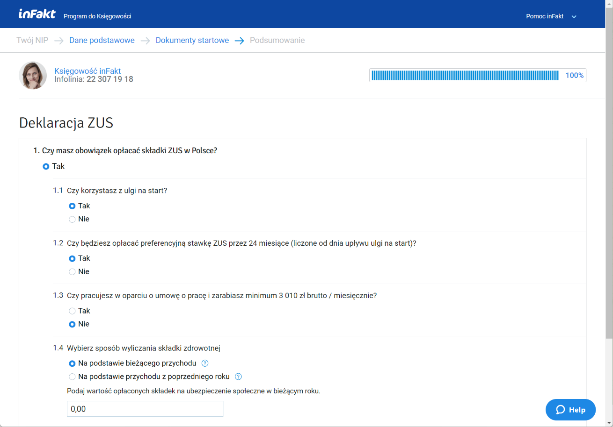
Выбираете свои настройки. Типичные настройки для начинающих:
- Czy korzystasz z ulgi na start? Tak
- Preferencyjna stawka ZUS przez 24 miesiące działalności Tak
- Sposob wyliczania składki zdrowotnej Na podstawie bieżącego przychodu
Если планируете оплачивать складки через infakt, имеет смысл добавить так же номер счета ZUS. Для этого введите номер своего счета в поле Indywidualny rachunek składkowy. Номер счета можно узнать из письма ZUS, которое приходит после регистрации, либо на самом портале ZUS -> Panel Płatnika -> Moje dane -> Numery rachunków składkowych
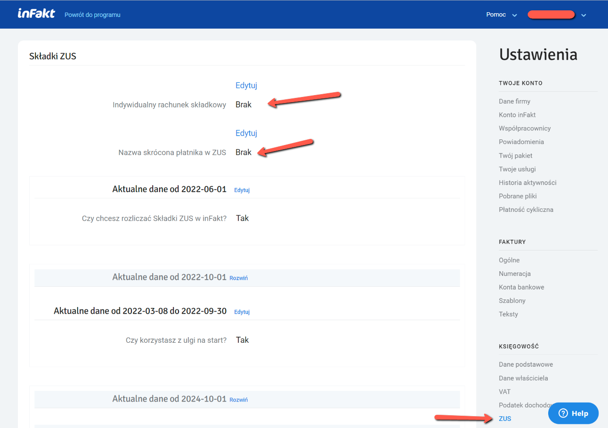
Настройки фактур
Пройдите в Ustawienia -> Faktury -> Ogólne чтобы настройить некоторые значения для фактур.
Основные настройки, влияющие на содержимое фактур, это Domyślna waluta (выбираем ту, что чаще используется), Domyślny sposób płatności (чаще всего это Przelew - банковский перевод).
TODO: добавить настройки специфичные для VAT
Настройка услуг
Добавляем продукт (в нашем случае - услугу) на странице Przychody -> Produkty -> Nowy Produkt
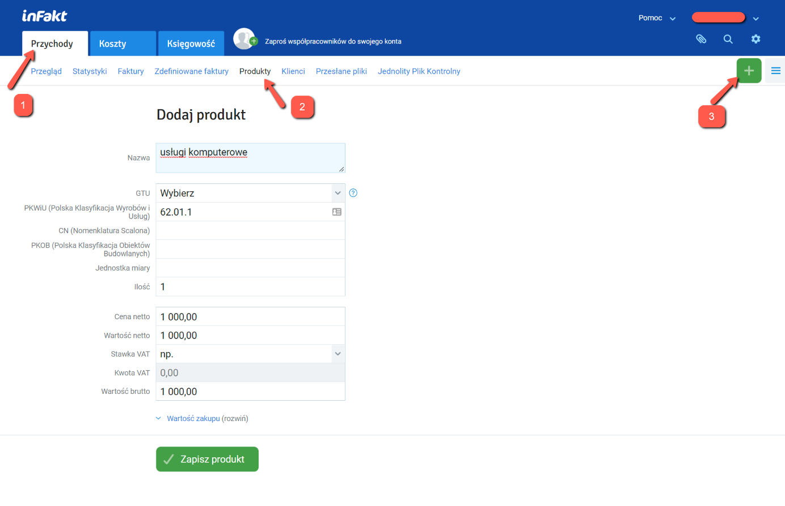
Обычно для программистов это могут быть:
- usługi komputerowe
- Tworzenie oprogramowania
- usługi oprogramowania
Важно выбрать то, что соответствует вашему роду деятельности и коду PKWiU В зависимости от контракта у вас может быть фиксированная сумма в месяц, либо почасовая ставка. Вписываем Cena netto = ваша ставка (за месяц или за час).
Указываем ставку VAT если вы являетесь плательщиком, или np. если вы оказываете услуги за границы EU (например, в США).
Выберите свою ставку Ryczałt для данной услуги. Ставка должна соответствовать коду PKWiU. Для программистов это 12%.
Настройка контрагентов
Добавляем вашего/ваших заказчиков на странице Przychody -> Produkty -> Nowy Klient
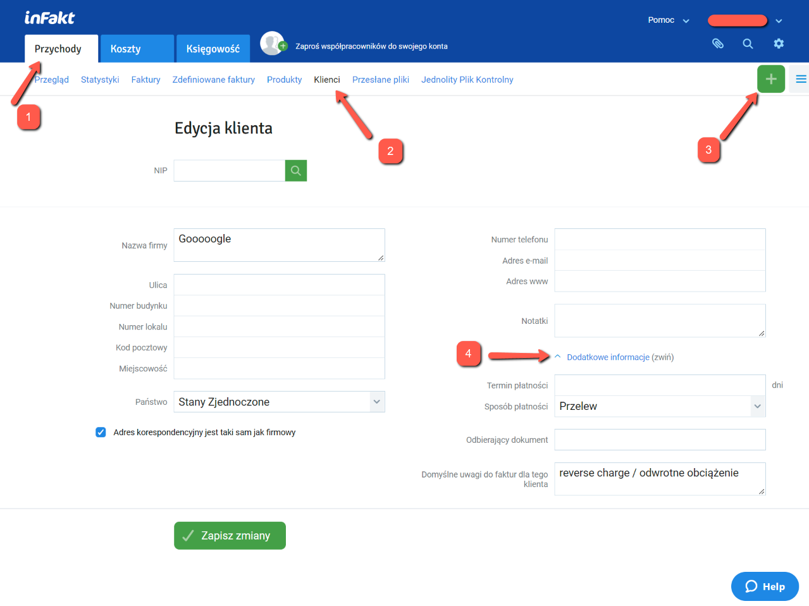
Ищем по номеру NIP либо вводим руками, если заказчик за пределами Польши, и сохраняем. Если клиент за пределами EU, то имеет смысл для него сохранить "reverse charge / odwrotne obciążenie" в поле Domyślne uwagi do faktur dla tego klienta. Так же можно настроить способ и сроки оплаты для этого клиента (если вам это важно). Как минимум, имеет смысл указать Sposób płatności (потому что он может сбиваться между разными фактурами с разным типом оплаты).
Добавляем сколько нужно контрагентов.
Настройка счетов
Добавляем свой счет на станице Ustawienia -> Faktury -> Konta bankowe.
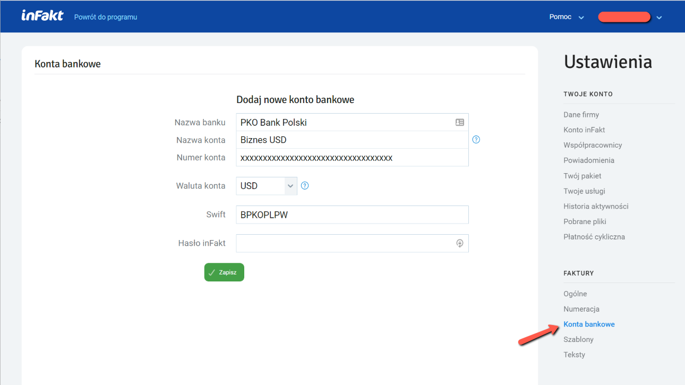
Этот счет будет показываться на фактуре для заказчика.
Если счетов больше чем один, в фактуре светится тот что установлен по-умолчанию (Konto domyślne). Можно будет сменить при создании фактуры.
Подпись на фактуре
Переходим в настройку шаблонов фактур на странице Ustawienia -> Faktury -> Shablony
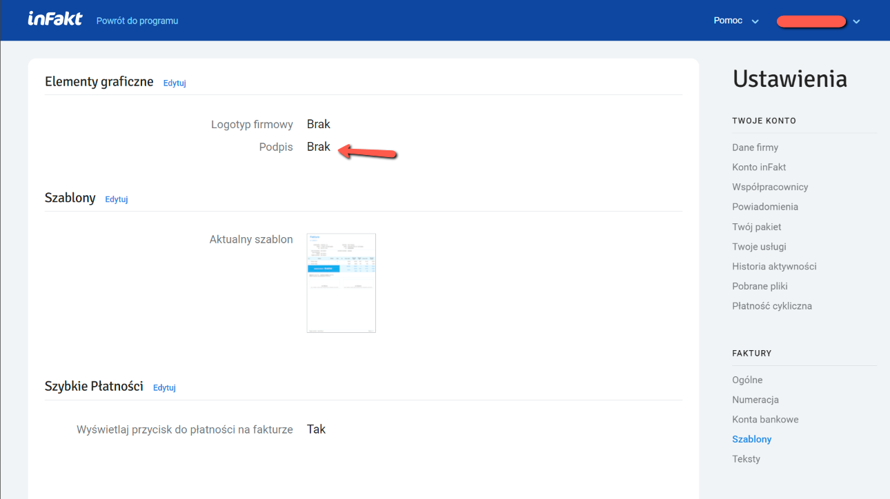
Тут можно добавить изображение своей подписи и логотип фирмы, а так же поиграться с шаблонами самой фактуры (infakt предлагает какой-то выбор).
Изображение подписи должно иметь соотношение сторон примерно 3 к 1 (я использовал картинку примерно 960x360).
Разное
Если будете пользоваться сервисом infakt для высылки фактур заказчику, можно настроить тексты писем на английском и польском языках. Для этого откройте Ustawienia -> Faktury -> Teksty и отредактируйте шаблоны писем.